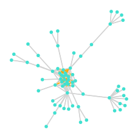
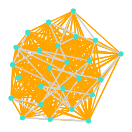
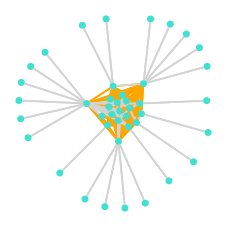
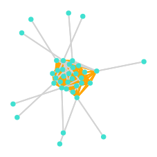
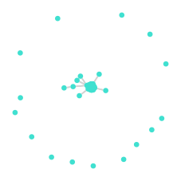
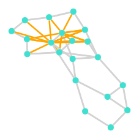
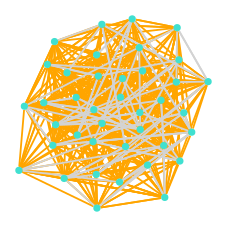
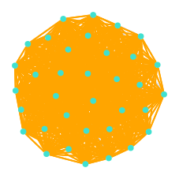
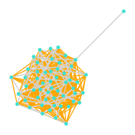

Datasets
The following section gives a description of the base instances and datasets that have been used for evaluating solver performances and training sparsifiers.
Base instances
| Name | # Vertices | # Edges | # Demands | Plot |
|---|---|---|---|---|
| AsnetAm_0_1_1 | 65 | 154 | 109 |  |
| AttMpls_0_1_1 | 25 | 112 | 390 |  |
| Chinanet_0_1_1 | 42 | 132 | 305 |  |
| Iij_0_1_1 | 37 | 130 | 368 |  |
| Ntt_0_1_1 | 47 | 126 | 504 |  |
| Oxford_0_1_1 | 20 | 52 | 23 |  |
| giul39_0_1_1 | 39 | 172 | 487 |  |
| india35_0_1_1 | 35 | 160 | 1176 |  |
| zib54_0_1_1 | 54 | 160 | 420 |  |